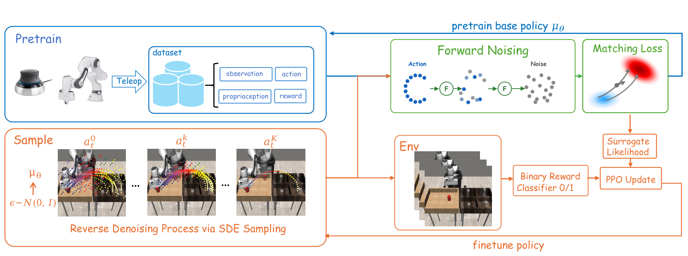
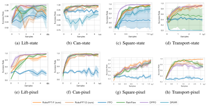
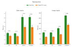
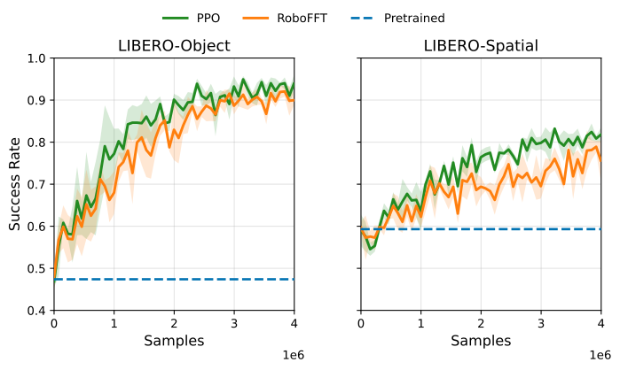
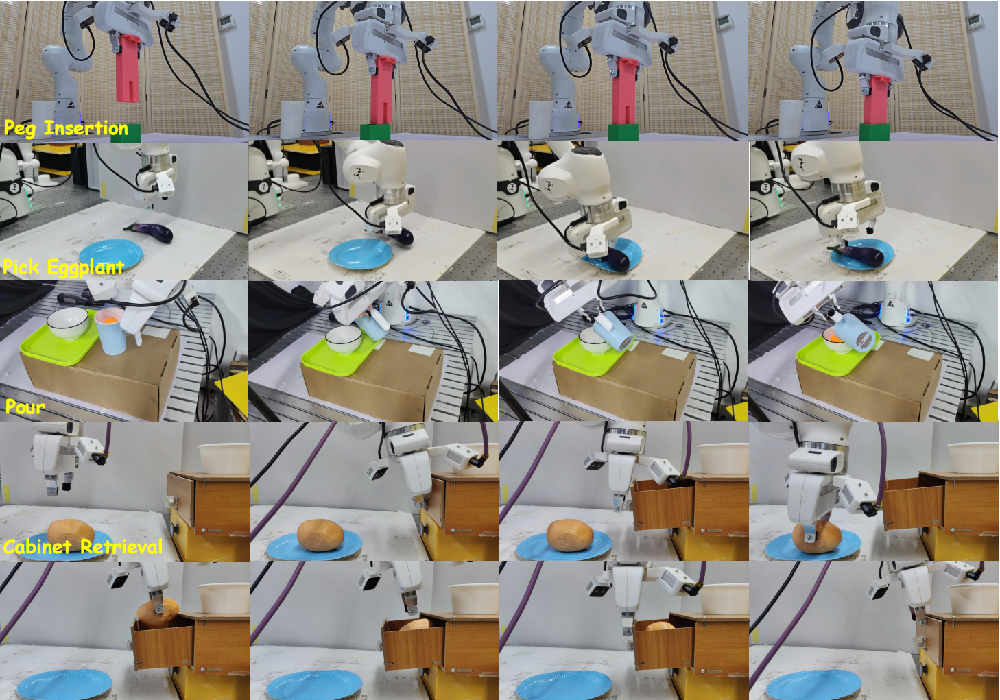

Generative models, such as diffusion and flow-based models, have shown strong promise for robot policy learning by capturing complex and multi-modal action distributions from demonstrations. However, policies trained solely with imitation learning often suffer from imperfect demonstrations and distributional shifts, while further improvement typically requires additional expert data. Reinforcement learning offers a natural solution through environment interaction, but effectively finetuning generative robot policies remains challenging due to the intractability of likelihood estimation. In this work, we propose RoboFFT, a forward-process reinforcement learning framework for finetuning generative robot policies, which applies forward noising to sampled actions and uses the weighted score / flow matching loss to construct a surrogate policy ratio for PPO-style updates. We evaluate RoboFFT with popular generative robot policies on representative simulation benchmarks, including long-horizon planning and sparse reward settings. Extensive experiments and analysis demonstrate that RoboFFT consistently improves performance while achieving better stability and training efficiency. We further integrate RoboFFT into a real world RL framework and demonstrate its effectiveness in real world tasks.


RoboFFT achieves competitive or stronger performance across Robomimic state- and pixel-input manipulation tasks.

RoboFFT-F achieves an average 1.53× training-time speedup over ReinFlow.

RoboFFT improves the pretrained VLA policy on LIBERO-Object and LIBERO-Spatial.
| Task | Flow | RoboFFT |
|---|---|---|
| Pick Eggplant | 12 / 20 | 18 / 20 |
| Peg Insertion | 10 / 20 | 19 / 20 |
Real-world success rates before and after RoboFFT finetuning.
Lift
Can
Square
Transport
Pick Eggplant
Peg Insertion
